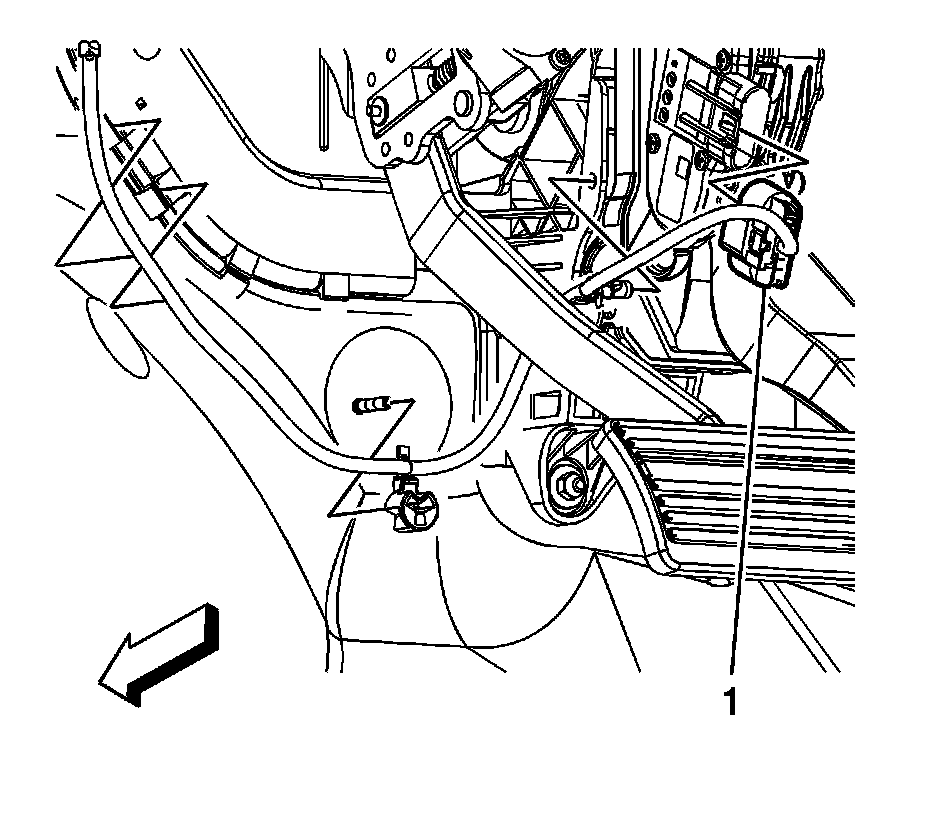

Accelerator Pedal Position Sensor: Service and Repair
ACCELERATOR PEDAL POSITION SENSOR REPLACEMENT
REMOVAL PROCEDURE
NOTE: Handle the electronic throttle control components carefully. Use cleanliness in order to prevent damage. Do not drop the electronic throttle control components. Do not roughly handle the electronic throttle control components. Do not immerse the electronic throttle control components in cleaning solvents of any type.

1. Remove the knee bolster.
2. Push down the small tab and disconnect the accelerator pedal position (APP) sensor electrical connector (1).

3. Remove the accelerator pedal bolts.
4. Remove the accelerator pedal.
INSTALLATION PROCEDURE
1. Position the accelerator pedal to the accelerator pedal bracket.
2. NOTE: Refer to Fastener Notice.
Install the accelerator pedal bolts.
Tighten the bolts to 9 N.m (80 lb in).
3. Connect the APP sensor electrical connector (1).
4. Connect a scan tool to the diagnostic port in order to test for proper throttle-opening and throttle-closing range.
5. Operate the accelerator pedal and monitor the throttle angles. The accelerator pedal should operate freely, without binding, between a closed throttle, and a wide open throttle (WOT).
6. Verify that the vehicle meets the following conditions:
- The vehicle is not in a reduced engine power mode.
- The ignition is ON.
- The engine is OFF.
7. Install the knee bolster.